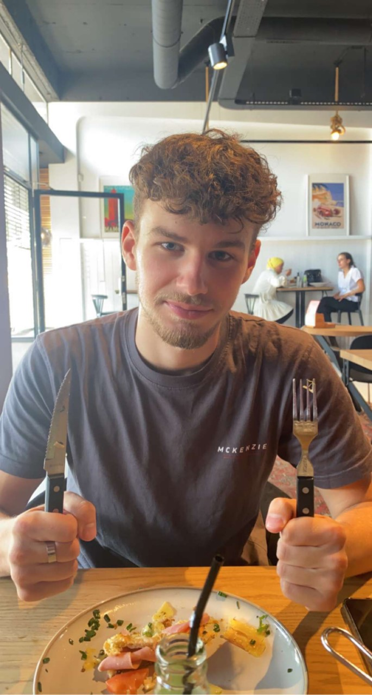
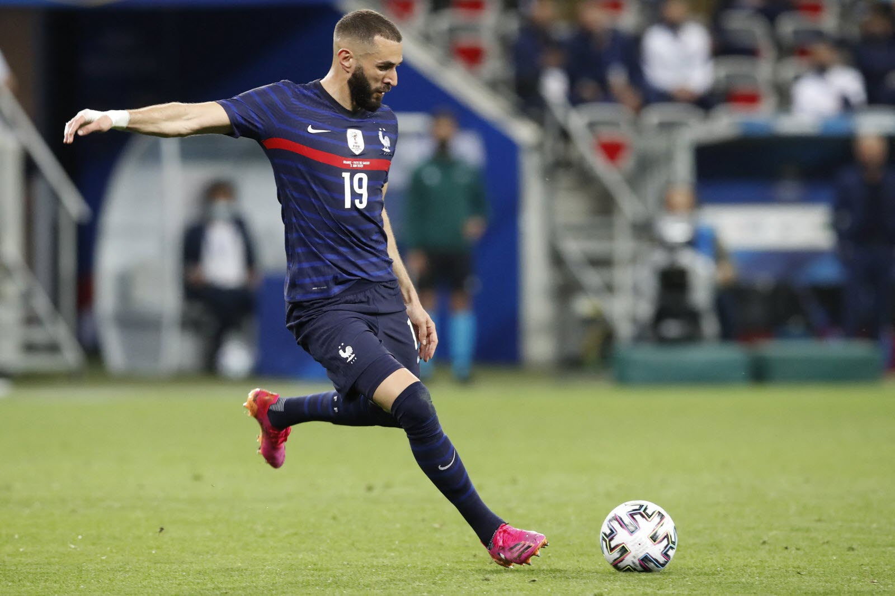
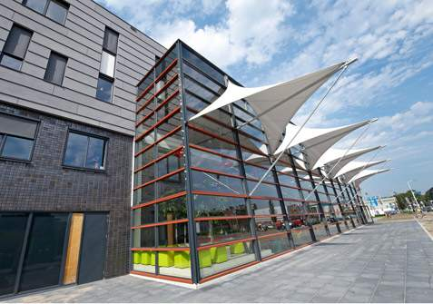

Wie ben ik?
Hi!
Ik ben Meris Beganovic, 18 jaar oud en woonachtig in Amsterdam. Ik ben geboren in Amsterdam maar mijn ouders komen oorspronkelijk uit Bosnie. Ik woon samen met mijn ouders, en een oudere zus. Ik heb veel hobbies, maar heb 1 hobby die voorop staat bij mij. Dat is namelijk voetbal! lees verder om meer te weten te komen over mijn hobby!
Ik heb een passie voor voetbal en speel dit bijna elke dag. Dit doe ik buiten op straat of ik ga naar een voetbalveld met mijn vrienden. Mijn passie voor voetbal is er altijd al geweest, toen ik jonger was speelde ik altijd buiten en was ik alleen bezig met nieuwe skills leren. Naarmate ik ouder werd en bij een team begon te spelen leerde ik meer in een teamspelen en hoe voetbal nou echt gespeeld moet worden.
 Ik volg de opleiding Software Developer op het MBO College Amstelland. Ik heb voor deze opleiding gekozen omdat ik niet echt een andere goeie keuze had, maar dat betekent niet dat ik het niet naar me zin heb op de opleiding. Ik vind de opleiding leuk en hoop mijn diploma te kunnen halen over een paar jaar!
